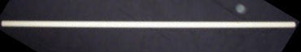
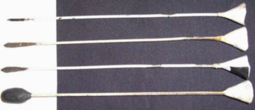
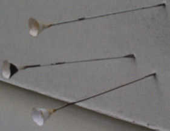
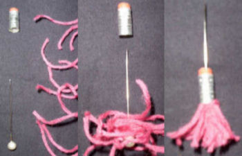
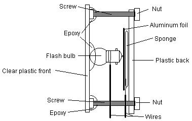
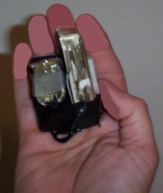
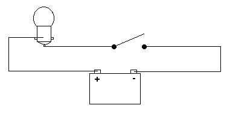

The Improv
by
Tom Spooner
|
This month's oddball tip: Emergency Power- Flashlights, radios, and other DC-powered goodies are nice to have in emergencies, or even just camping. Simplify your life by buying gear that all runs off the same type of batteries. Then buy a pile of rechargeables and a charger. I went with AAs, which gave me the advantage of a secondary charging source; besides the wall charger, I have a solar-powered charger. Extra tip- Get one of those LED flashlights; they're great. I have a small one that runs (yep) on 2 AA batteries. I use it pretty much every day. And I've had the same set of batteries in it since late 2001 (no recharge either).
 Buy my book!
Rating = Average If you're having trouble getting it to work, it would be easier for me to help you if I knew what your difficulty is. And I'd be more likely to want to if you didn't open with an insult. The PVC pipe blow gun and darts do work. Here's a set made to those instructions.  That's a three and a half foot piece of half inch PVC pipe.  These darts are about six and half inches long. From top to bottom there's a target point, two spear points, and a stun dart. The cones look shiny because I "laminated" them with scotch tape when they started to wear. You can see some black electrical tape on one spear point dart, because that's what I had handy the day that cone tore.  And here are the darts after being fired into a board from several yards away. It works. Maybe not as well as a fancy aluminum blow gun from the store with mass-produced darts, but it does the job. And I had fun doing it.
Rating = Excellent
>>>>>-----/ # is the yarn > is the head of the pencil - is the pin it-self / is the head of the pin Using the Darts:
Belac backwards It works, but it's only suitable for harassment, unless you're hunting housemice. For those who didn't quite get his illustration: 
Viktor Liberty's Flash Blinder
Rating = Excellent Early on in the history of DF there was an article on making a blinding device, someone else wrote it but I was wondering if you could do up a diagram of what the parts would look like assembled. I have a hard time visualizing such things so any help would be appreciated. Thank you! I had a little trouble visualizing Viktor Liberty's flash blinder myself, partly because I didn't know how the "M5" flash bulb is shaped. But apparently it has something like a flashlight bulb's bayonet base. So the blinder would assemble something like so:  The wires go off to a switch and battery. I had some small flashbulbs laying around (scavenged from an old flashbar for an SX70-type camera), and came up with this variant.  I soldered one lead from a nine volt battery connector (without the battery attached) to one lead on the flash bulb. The other connector lead went to one terminal of a doorbell button. I then soldered a wire onto the remaining flash bulb lead; the opposing end of the wire went to the other button terminal. I taped the flash bulb (with a reflector also scavenged from the flash bar) to the battery with scotch tape (clear tape so it won't block light). Then I taped the doorbell button to the battery. I added a loop of doubled tape so I could slide this onto two fingers and palm it. Only after all construction is completed should you connect the battery. Use the blinder by sticking your palm into your assailant's face (in a "halt!" motion and thumbing the button. A single small bulb may be sufficient for night time use, but for daylight, you'll want to parallel multiple bulbs for more flash. The basic circuit for either version is  According to the data I found, these bulbs trigger anywhere from three volts to thirty. So if you use AAs, you'll need a minimum of two batteries; or you could use a nine volt battery like I did.
|